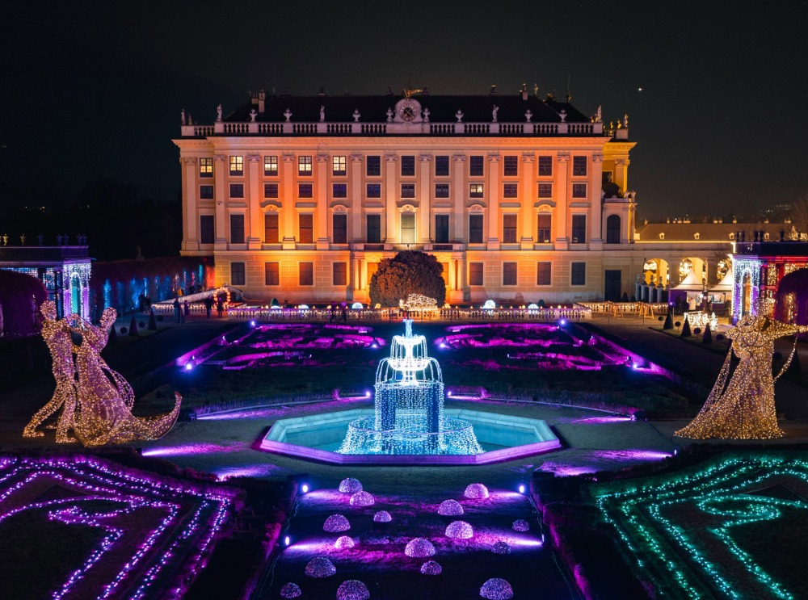
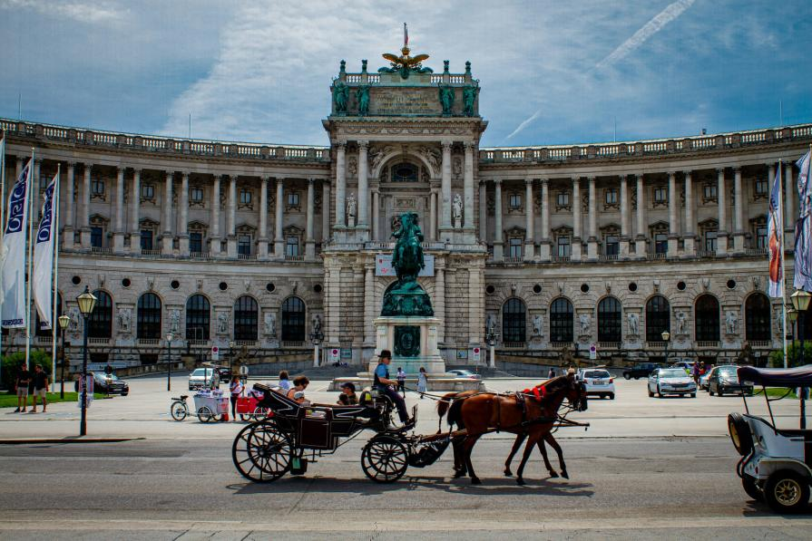
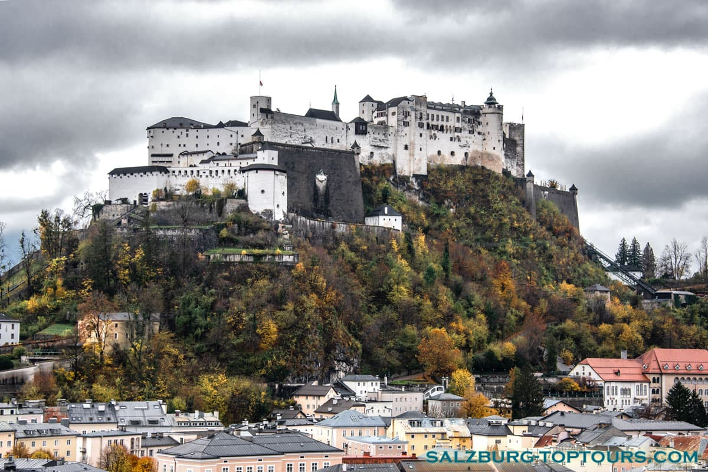
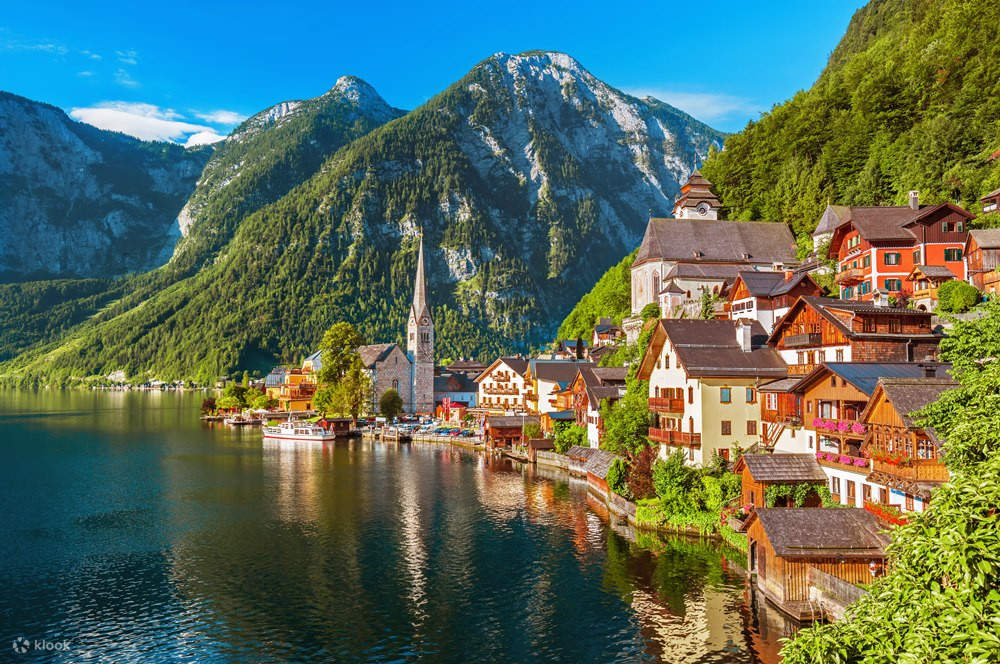
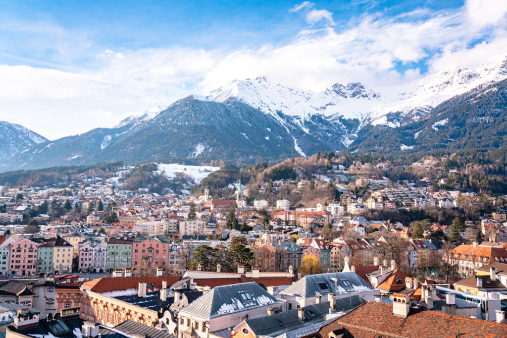

Schönbrunn Palace, Vienna


Step into the grandeur of Vienna at Schönbrunn Palace, where baroque elegance meets centuries of imperial history. Wander through
gilded halls, ornate rooms, and vast gardens that once echoed with the footsteps of emperors and empresses. From the vibrant flowerbeds
to the sweeping views of the city, every corner tells a story of art, power, and timeless beauty. A stroll here is more than
sightseeing—it’s a journey through Austria’s royal past, inviting visitors to experience the splendor, charm, and poetic allure of
Vienna in every glance.
Best time to visit: Early morning or late afternoon
Opening hours: Daily, approx. 8:30–17:00 (longer in summer)
Entry: Palace interiors require a ticket (€27+), gardens are free
SEE MAP
Hofburg Palace, Vienna


Discover the majestic heart of Vienna at Hofburg Palace, a sprawling imperial complex that has shaped centuries of Austrian history.
Wander through opulent state rooms, imperial apartments, and grand halls that once hosted emperors, diplomats, and visionaries. From
the Imperial Treasury to the Spanish Riding School, every corner brims with stories of power, art, and tradition. Hofburg is more than
a monument—it’s a living testament to Vienna’s regal past, inviting visitors to immerse themselves in the elegance, history, and
poetic charm of Austria’s capital.
Best time to visit: Early morning or late afternoon
Opening hours: Daily, usually 09:00–17:30 (last entry ~16:30)
Entry: Palace interiors (Sisi Museum & Imperial Apartments) require a ticket (~€20+), courtyard & grounds are free to explore
SEE MAP
St. Stephen’s Cathedral (Stephansdom), Vienna
Rising proudly in the heart of Vienna, St. Stephen’s Cathedral is a masterpiece of Gothic architecture and a symbol of the city’s
enduring spirit. Its multicolored tiled roof, towering spire, and intricate stone carvings captivate every visitor, while inside,
the hushed nave and ornate altars evoke centuries of devotion and artistry. Climb the tower for sweeping views of Vienna’s rooftops
and streets, or simply linger in the quiet majesty of this sacred space. Stephansdom is more than a cathedral—it’s a poetic journey
through faith, history, and the soul of Austria.
Best time to visit: Early morning or late afternoon
Opening hours: Daily approx. 6:00–22:00 (tourist visiting times ~09:00–11:30 & 13:00–16:30)
Entry: Main nave is free; special areas (towers, catacombs, treasury) require a ticket (€6–€25+ depending on combo)
SEE MAP
Salzburg Old Town & Hohensalzburg Fortress


Step into a fairytale in Salzburg’s Old Town, where cobblestone streets wind past baroque churches, charming squares, and colorful
facades echoing centuries of history. Rising above it all, Hohensalzburg Fortress stands proudly atop the hill, offering panoramic
views of the city, the Salzach River, and the surrounding Alps. Explore its ancient walls, grand halls, and medieval towers, where
every stone tells stories of princes, sieges, and music legends like Mozart. Together, the Old Town and fortress invite visitors to
wander, dream, and immerse themselves in Salzburg’s timeless beauty and poetic charm.
Best time to visit: Early morning or late afternoon (quieter & cooler)
Opening hours: Fortress open daily (seasonal hours, e.g., May–Sept ~8:30–20:00, shoulder seasons ~9:30–17:00)
Entry: Old Town is free to explore; for Fortress Hohensalzburg interiors & museums you need a ticket (~€15–€19+ depending on package), walking
up is free (funicular optional extra)
SEE MAP
Hallstatt


Nestled between shimmering alpine waters and towering mountains, Hallstatt is a picture-perfect village that feels plucked from a
storybook. Its pastel-colored houses cling to the lakeside, reflecting in the tranquil Hallstätter See, while narrow streets lead
you past charming cafes, historic churches, and centuries-old salt mines. Whether strolling along the waterfront, taking a boat across
the mirror-like lake, or marveling at the surrounding peaks, Hallstatt enchants every visitor with its serene beauty, timeless charm,
and poetic alpine magic.
Best time to visit: Early morning or late afternoon (quieter & perfect lake views)
Opening hours: Town is open all day (village streets & viewpoints are free); attractions like the Skywalk & funicular usually
run ~9:00–18:00 (varies by season)
Entry: Hallstatt old town & lakeside are free to explore; some sights (Skywalk, funicular, salt mine tours) require tickets €10+ depending on activity
SEE MAP
Innsbruck & The Nordkette Mountains


Where alpine majesty meets city charm, Innsbruck nestles in a valley framed by the towering Nordkette Mountains. Wander the historic
streets lined with colorful façades, imperial palaces, and cozy cafés, then take a cable car ride high above the city to the Nordkette
peaks. From snow-dusted summits to panoramic vistas of the Inn Valley, every moment feels like stepping into a painting. Adventure,
history, and breathtaking scenery blend seamlessly, making Innsbruck and its mountains a destination that inspires awe and wonder in
every traveler.
Best time to visit: Spring–Autumn for views & hiking; winter for snow sports
Opening hours: Town is open all day; Nordkette Cable Car runs regularly (typically ~09:00–17:00, season‑dependent)
Entry: Innsbruck city center is free to explore; Nordkette Cable Car tickets required for mountain access (~€30+ roundtrip, varies by season/activity)
SEE MAP